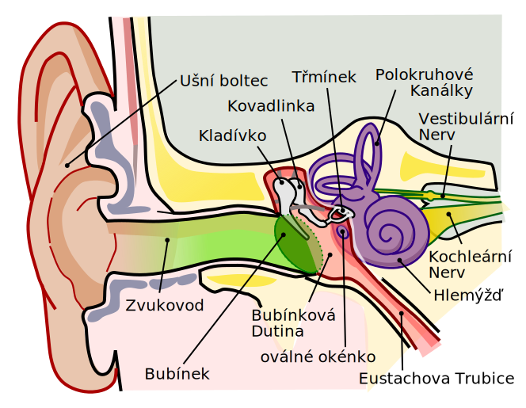
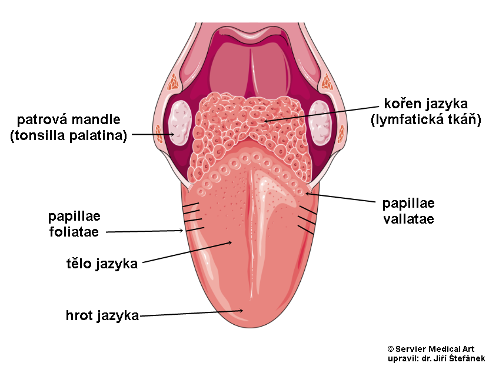

Smyslová soustava je klíčová pro vnímání okolního světa a umožňuje
nám reagovat na různé podněty. V tomto článku se dozvíte, jak
fungují jednotlivé smysly člověka – zrak, sluch, čich, chuť a hmat,
jaké orgány jsou za ně zodpovědné a proč jsou pro náš každodenní
život nepostradatelné.
Zrak
-
zrak je smysl, který umožňuje vnímání světla a
barev
-
zrakový orgán je oko, které se skládá například z
rohovky, čočky, sítnice a duhovky
-
díky zraku můžeme vidět okolní svět a reagovat na vizuální podněty
Sluch

stavba ucha
Autor:
H.karasek
(talk)derivative work:
H.karasek,
CC BY 2.5,
Odkaz
- sluch je smysl, který umožňuje vnímání zvuků
-
sluchový orgán je ucho, které se skládá z
vnějšího, středního a vnitřního ucha
- díky sluchu slyšíme a vnímáme zvukové podněty z okolí
Čich
-
čich je smysl, který umožňuje vnímání vůní a pachů
-
čichový orgán je nos, který obsahuje
čichové buňky v horní části nosní dutiny
- díky čichu rozpoznáváme různé vůně a pachy
Chuť

stavba jazyka
zdroj:
stefajir.cz
- chuť je smysl, který umožňuje vnímání chutí
-
chuťový orgán je jazyk, na jehož povrchu jsou
chuťové pohárky, které rozlišují základní chutě
-
díky chuti poznáváme
sladké, slané, kyselé, hořké a umami
Hmat

stavba kůže
-
hmat je smysl, který umožňuje vnímání
dotyku, tlaku, tepla, chladu a bolesti
-
hmatu slouží kůže, která obsahuje různé typy
receptorů pro různé podněty
- díky hmatu cítíme doteky a reagujeme na změny prostředí
Zdroj obrázku kůže: Autor:
File:Skin numbers.jpg:
Sgbeerderivative work:
HynekJanac
– Tento soubor byl odvozen z:
Skin numbers.jpg: File:Skin numbers.jpg,
CC BY-SA 3.0,
Odkaz
{kind=link}
{kind=link}
{kind=link}
{kind=link}
{kind=link}